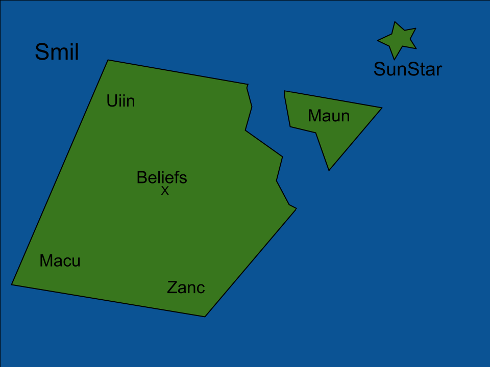
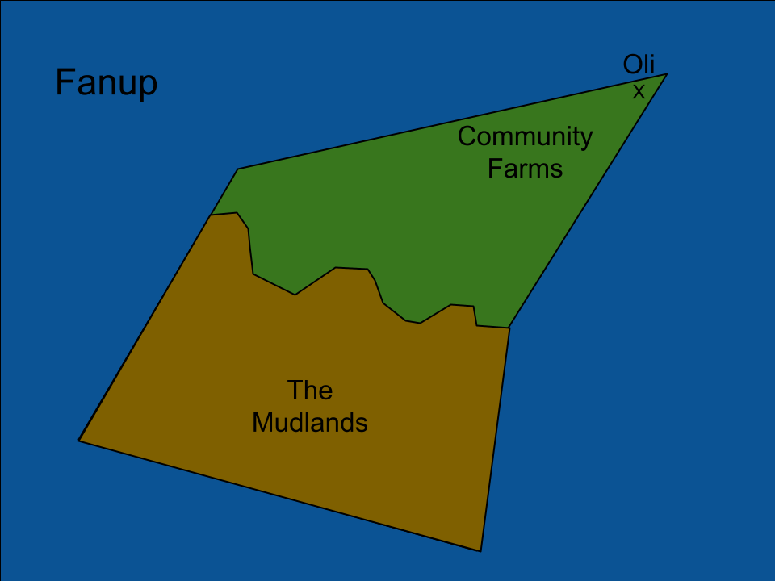

Maps And Towns
Map of Kasie's Islands

Youb
Youb is a nice island, most people come here to settle down and start a family. Making most of the population elderly and parents. This island focuses on farming, because of the rich nutrients in the soil. This island is visited the most during the spring equinox, for its festival. Each of the three towns cerabrate the festival, with Darin being the most popular area. People are raised to not go near the forest, in fear of what learks inside. Not much to say about these towns, their pretty generic.

Smil
Smil is the smallest of the islands, when zoomed out it looks like one intact island. All 3 islands are considered apart of Smil. Smil is where all the religions lie, the island has 4 of the most important churches. The towns of Smil are each dedicated to a deity. The town of Uiin worships May, it holds the 2 churches and a monastary. Maun worships Vale, they spend most of there time on the docs and the water. Zanc worships Kasie, they have a church made of stained glass, alot of explosions happen in this town. Macu worships Valley, there are more animals then people in the town. Beliefs is ran by representatives of each town, the town trys to bridge the gap between the worship of the dieties. SunStar is a small town, known for fishing. People don't stay in SunStar too often, not much is known about it.
Fanup
Fanup is the biggest island of Kasie's Islands. Fanup is a fishing island, its society is based on if you can use a rod. Those who can't fish teach, or build the boats. They also herd animals, making this island the best meat producer for the islands. 70% of what they kill and catch goes to Skyward. The rest of the 30% gets distrubuted by need to the people. Most of the land in Fanup is uninhabitable, called the Mudlands. People go in, and never come out. Oli is the only town in Fanup, there are a few settlements however.
